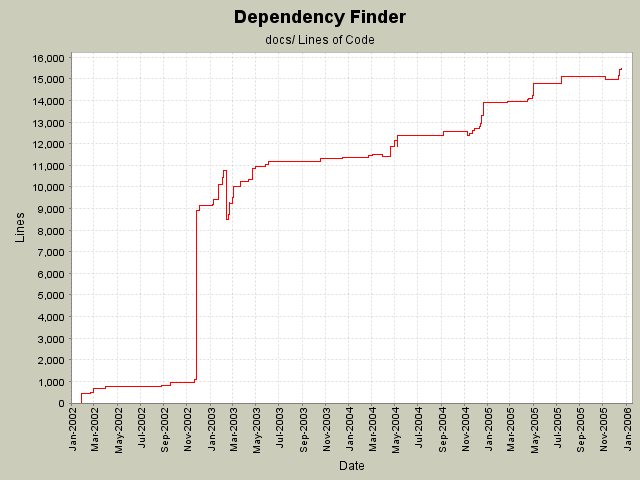

Summary Period: 2002-01-28 to 2005-12-19
[root]/docs
 images
(85 files, 0 lines)
images
(85 files, 0 lines)
 tasks
(14 files, 2359 lines)
tasks
(14 files, 2359 lines)

Total Lines Of Code:
15467 (2006-01-04 08:56)
| Author | Changes | Lines of Code | Lines per Change |
|---|---|---|---|
| jeantessier | 130 (100.0%) | 24612 (100.0%) | 189.3 |
Updated Manual section on JarJarDiff
252 lines of code changed in:
Tech docs for dependency.Visitor and Monitor
281 lines of code changed in:
Document event loop for processing classfiles with example dependency extraction
109 lines of code changed in:
Describe ClassfileLoader hierarchy
102 lines of code changed in:
Merge redesign for published API JarJarDiff
81 lines of code changed in:
Fix typos
3 lines of code changed in:
Negative closure
332 lines of code changed in:
Document ClassFinder.
Highlight command-lines and outputs.
620 lines of code changed in:
Document referenced vs. concrete nodes
260 lines of code changed in:
Document the web app and its config
32 lines of code changed in:
Added documentation to transitive closures
99 lines of code changed in:
Use favicon.ico in docs
1 lines of code changed in:
Use only spaces for indentation
24 lines of code changed in:
Use only spaces for indentation
1495 lines of code changed in:
Code coverage instructions
42 lines of code changed in:
Better instructions for narrowing diffs to used API
64 lines of code changed in:
Make HTML-compliant, instead of XHTML.
8 lines of code changed in:
Document OOMetrics configurations
46 lines of code changed in:
Fix broken background color
1 lines of code changed in:
Clean up
814 lines of code changed in:
(84 more)
Generated by StatCVS 0.2.2